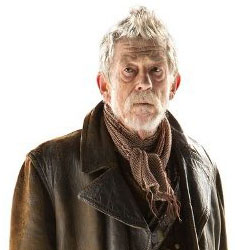

| Home | The Doctors | The Companions | The Villans |
|
|||
|
The War DoctorThe War Doctor is an incarnation of the Doctor, the protagonist of the BBC science fiction television programme Doctor Who. He is portrayed by English actor John Hurt.[5] Although he precedes Christopher Eccleston's Ninth Doctor in the show's fictional chronology,[5] his first onscreen appearance came eight years after Eccleston's; the War Doctor was retroactively created by showrunner Steven Moffat for productions celebrating the show's 50th anniversary, owing to Moffat's desire to tell the story of the last day of the Last Great Time War in the special after Eccleston declined to appear. Within the programme's narrative, the Doctor is a centuries-old alien, a Time Lord from the planet Gallifrey, who travels in time and space in his TARDIS, frequently with companions. When the Doctor is critically injured, he can regenerate his body, but in doing so, gains a new physical appearance and with it, a distinct new personality. This plot device has allowed a number of actors to portray different incarnations of the Doctor over the show's long run. The War Doctor, not so named within the episodes in which he appears, is introduced as the incarnation of the Doctor who fought in the Time War of the show's modern-day backstory. He was created as a result of a conscious decision of the Eighth Doctor, played by Paul McGann, to take up arms and become a warrior; in accepting this duty, the War Doctor disowned the title of "Doctor," and after the war's end is viewed with disdain by his subsequent incarnations, who reprise the name "Doctor". In the 50th anniversary special "The Day of the Doctor", however, the incumbent Eleventh Doctor played by Matt Smith revises his opinion of this incarnation after revisiting the final moments of the war. |